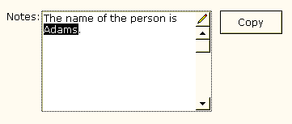

Copying Selected Text from a Memo Control
The following example shows how to copy selected text from a memo control. The script then pastes the copied text into a different text control on the same form.

The memo field is named Notes. The Notes.activate() statement activates the memo control, because it loses focus when you click the Copy button. The ptr = ui_editor_get() statement gets a pointer to the editor associated with the memo control. The ptr.copy()statement copies the current selection of text into the clipboard. The last 2 lines of the script retrieve the text from the clipboard and paste it into the lastname field of the form.
|
dim name as C dim ptr as P Notes.activate() ptr = ui_editor_get() ptr.copy() name = clipboard.Get_Data() lastname.text = name |